Установка и Конфигурация ОС на Виртуальную Машину
Приобретение практических навыков установки операционной системы на виртуальную машину.
В приложнии VirtualBox создаю новую виртуальную машину. Указываю имя виртуальной машины и добавляю оптический диск.
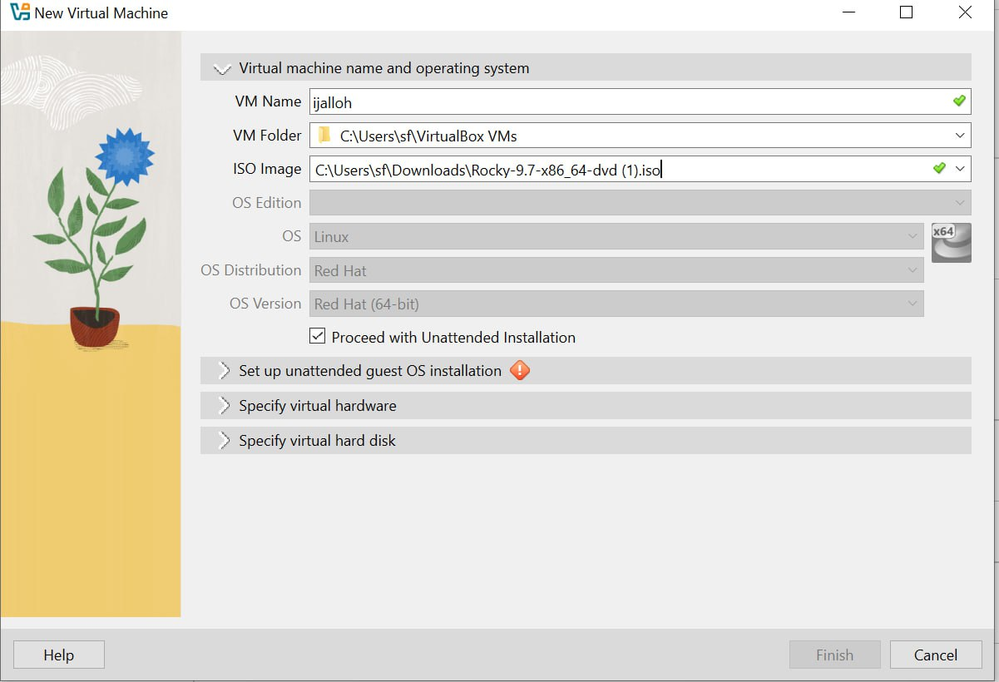
Указываю обьем памяти и создаю виртуальнный жетский диск.
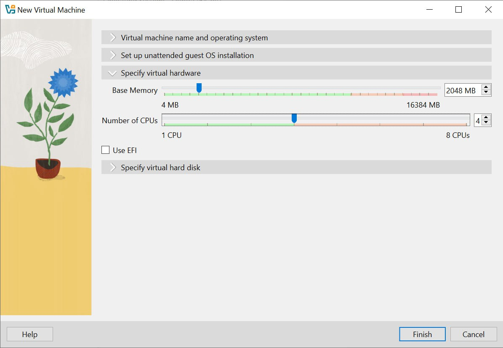
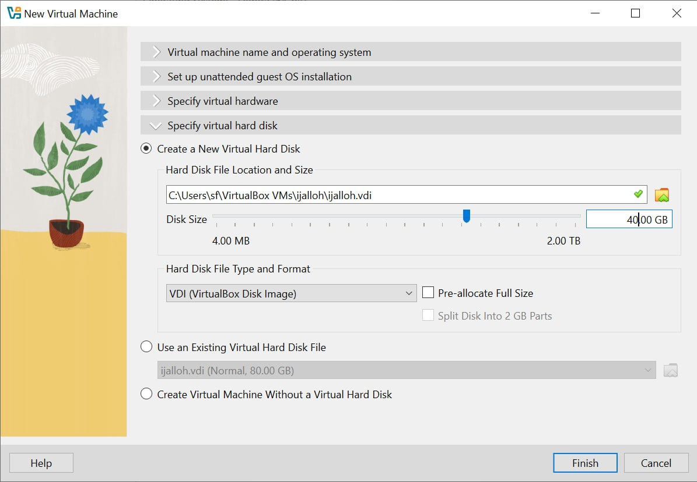
Соглашаюсь с поставленными настройками.
Проверяю подключения диска в носителях образ.
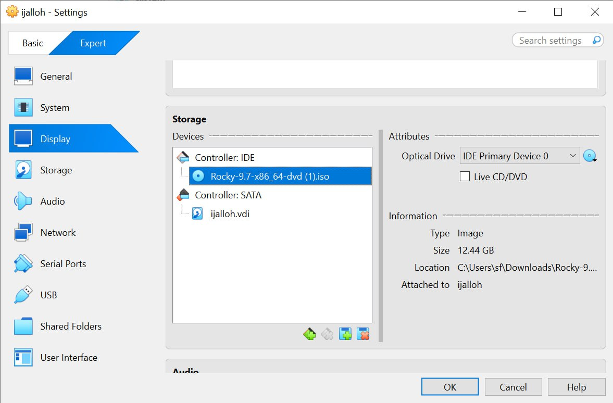
Запускаю машину и устанавливаю систему.
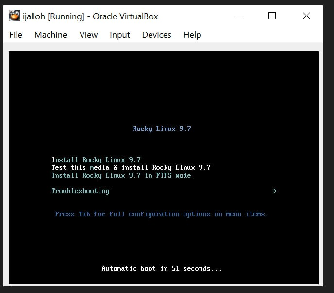
Выбираю язык установки.
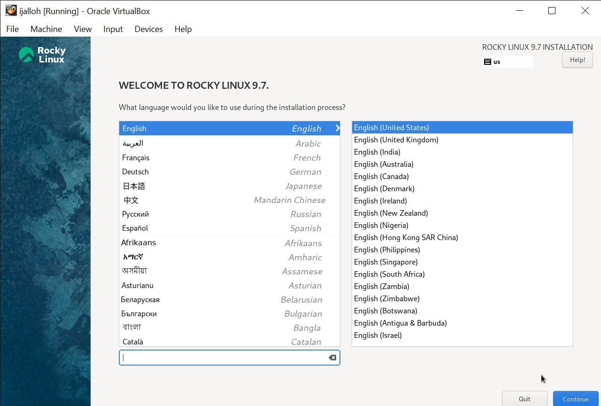
Выбираю место установки, отключаю kdump, создаю пользователя (администратор) и устанавливаю пароль для администратора.
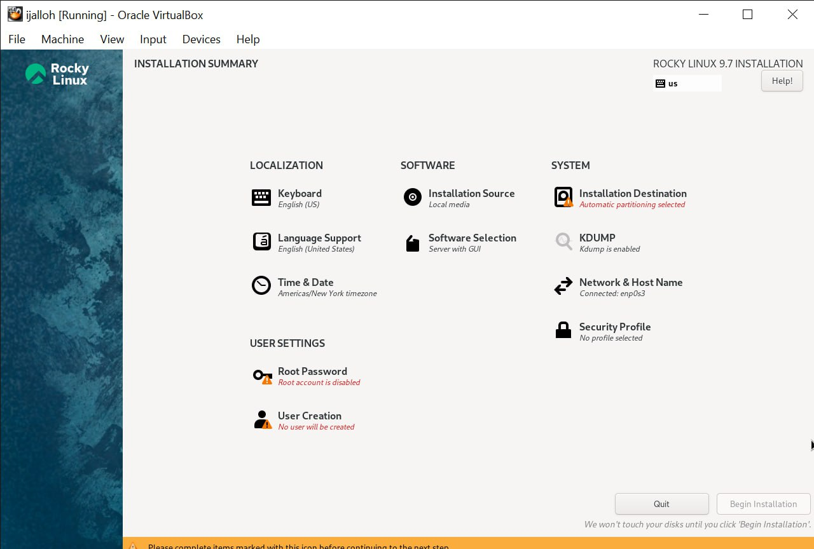
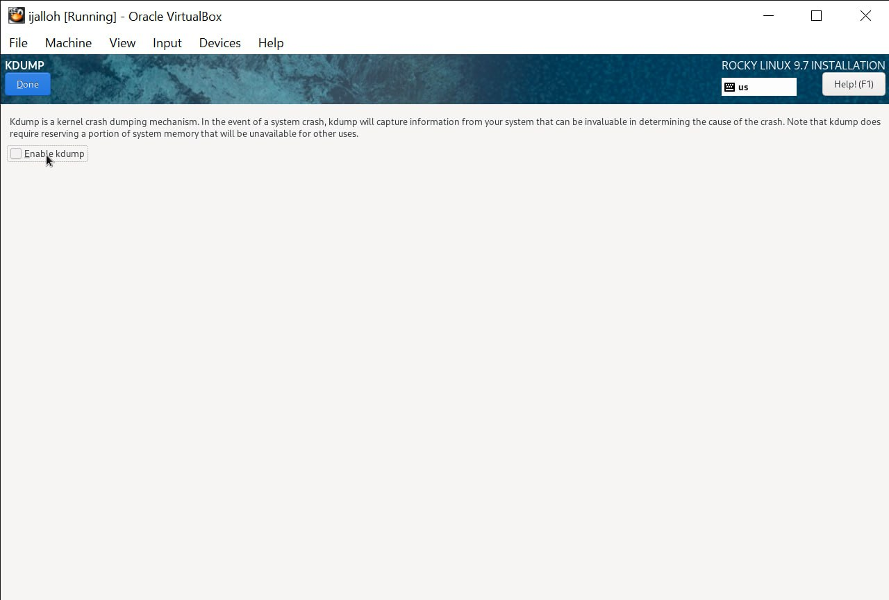
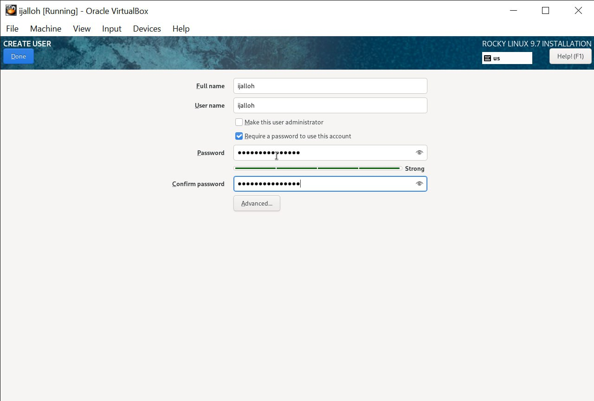
Выбираю окружение сервер с GUI и средства разработки в дополнительном программном обеспечении.
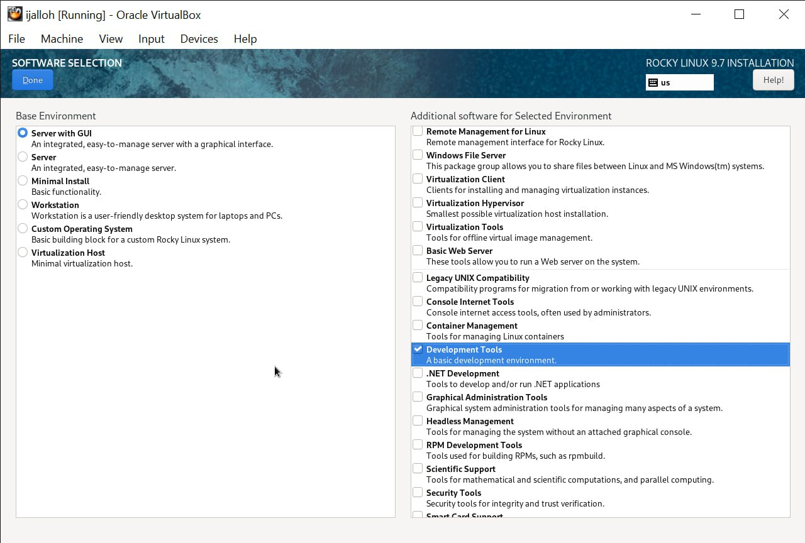
Указываю имя узла.
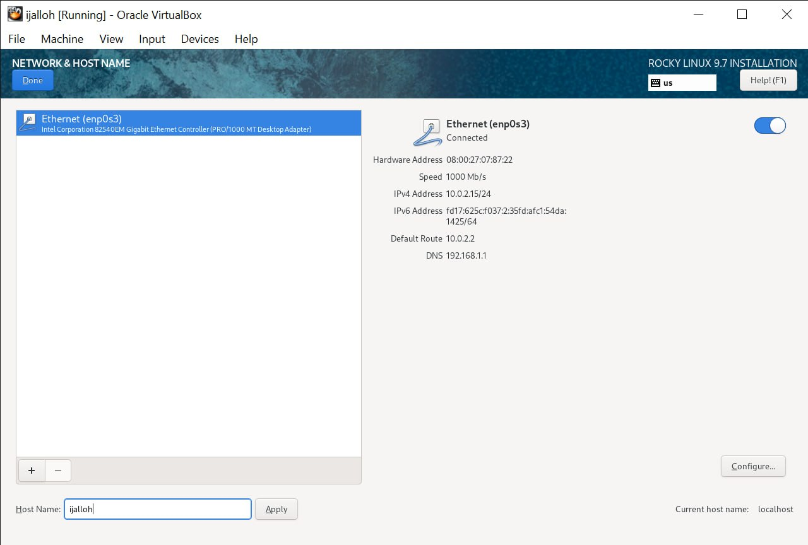
Затем устанавливаю систему.
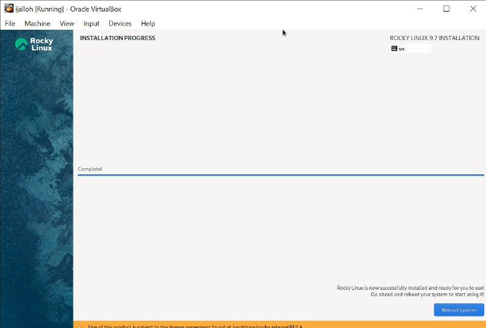
После завершения установки образ диска пропадет из носителей.
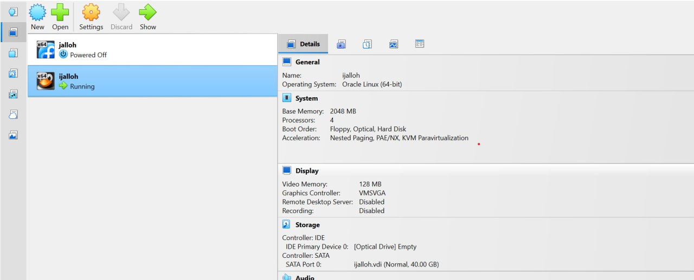
При запуске виртуальной машины появляется окно выбора пользователя.
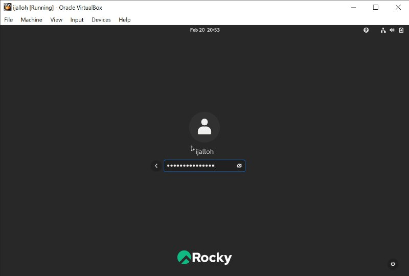
Запускаю в терминале: dmesg | grep -i “Linux version”, чтобы получить информацию о ядра.
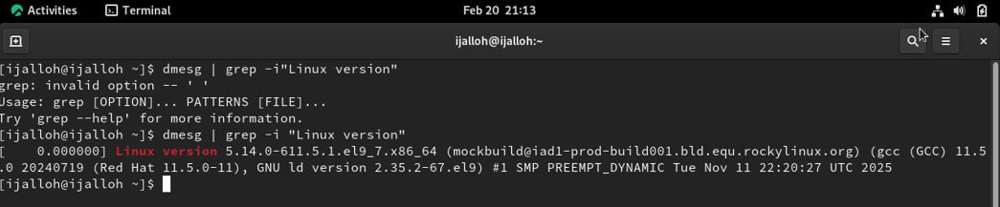
dmesg | grep -i “detected”, чтобы получить информацию о процессоре.
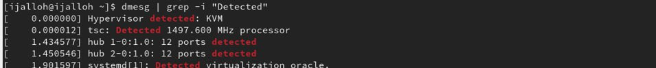
dmesg | grep -i “CPU”, чтобы получить информацию о модели процессора.
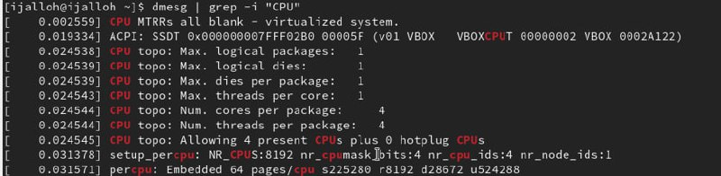
dmesg | grep -i “memory”, чтобы получить информацию о памяти.
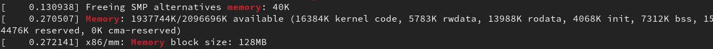
dmesg | grep -i “detected”, чтобы получить информацию о гипервизоре.
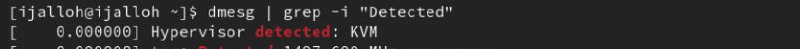
sudo fdisk -l, чтобы получить информацию о файловой системе корневого раздела.
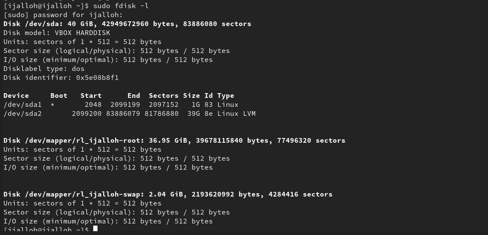
dmesg | grep -i “mount”, чтобы получить информацию о монтировании файловых систем.
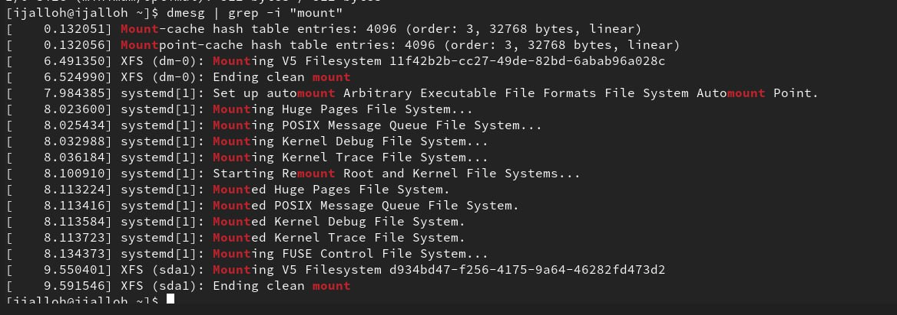
Учетная запись содержит необходимые для идентификации пользователя при подключении к системе данные, а так же информацию для авторизации и учета: системного имени (user name) (оно может содержать только латинские буквы и знак нижнее подчеркивание, еще оно должно быть уникальным), идентификатор пользователя (UID) (уникальный идентификатор пользователя в системе, целое положительное число), идентификатор группы (CID) (группа, к к-рой относится пользователь. Она, как минимум, одна, по умолчанию - одна), полное имя (full name) (Могут быть ФИО), домашний каталог (home directory) (каталог, в к-рый попадает пользователь после входа в систему и в к-ром хранятся его данные), начальная оболочка (login shell) (командная оболочка, к-рая запускается при входе в систему).
Для получения справки по команде: <команда> —help; для перемещения по файловой системе - cd; для просмотра содержимого каталога - ls; для определения объёма каталога - du <имя каталога>; для создания / удаления каталогов - mkdir/rmdir; для создания / удаления файлов - touch/rm; для задания определённых прав на файл / каталог - chmod; для просмотра истории команд - history
Файловая система - это порядок, определяющий способ организации и хранения и именования данных на различных носителях информации. Примеры: FAT32 представляет собой пространство, разделенное на три части: олна область для служебных структур, форма указателей в виде таблиц и зона для хранения самих файлов. ext3/ext4 - журналируемая файловая система, используемая в основном в ОС с ядром Linux.
С помощью команды df, введя ее в терминале. Это утилита, которая показывает список всех файловых систем по именам устройств, сообщает их размер и данные о памяти. Также посмотреть подмонтированные файловые системы можно с помощью утилиты mount.
Чтобы удалить зависший процесс, вначале мы должны узнать, какой у него id: используем команду ps. Далее в терминале вводим команду kill < id процесса >. Или можно использовать утилиту killall, что “убьет” все процессы, которые есть в данный момент, для этого не нужно знать id процесса.
Я приобрела практические навыки установки операционной системы на виртуальную машину, настройки минимально необходимых для дальнейшей работы сервисов.
::: :::